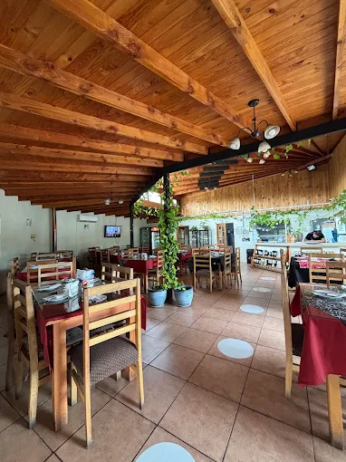

En Cuatro Estaciones, entendemos la gastronomía como un ciclo vivo. Nos inspira la transformación de la naturaleza a lo largo del año, adaptando nuestra carta gastronómica para ofrecer siempre lo mejor de cada temporada.
Nuestra propuesta de Cocina de Autor rescata ingredientes frescos, apoyando a productores locales y transformándolos en platos únicos que despiertan recuerdos y emociones en cada bocado.